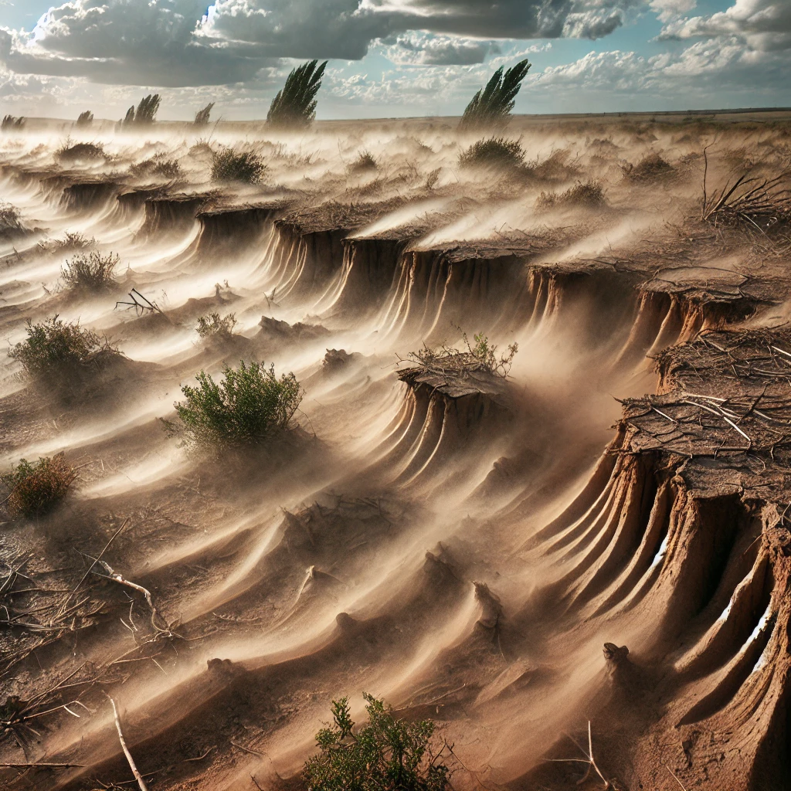

Causes of Soil Erosion
Soil erosion is driven by both natural and human activities. Below are the major causes that contribute to the degradation of soil:
Flodding
Water erosion is caused by rainfall and surface runoff, which can carry away topsoil. Heavy rainfall and inadequate vegetation can lead to rapid erosion, especially on sloped land.

Wind Erosion
Wind erosion occurs in dry regions with little vegetation. Strong winds can pick up and blow away loose soil particles, especially when the land has been overgrazed or overplanted.
Human Activity
Construction
The construction of roads and buildings exposes the soil to erosion. The forests and grasslands are cleared for construction purposes, which exposes the soil making it vulnerable to erosion.

Logging and Mining
A large number of trees are cut down to carry out the logging process. Trees hold the soil firmly. The canopy of the trees protects the soil from heavy rainfall. The leaf litter that protects the soil from erosion, is also lost during logging.

Over Grazing
overgrazing, and poor agricultural practices contribute to the loss of vegetation cover, which accelerates soil erosion. The removal of plants exposes the soil to wind and water.